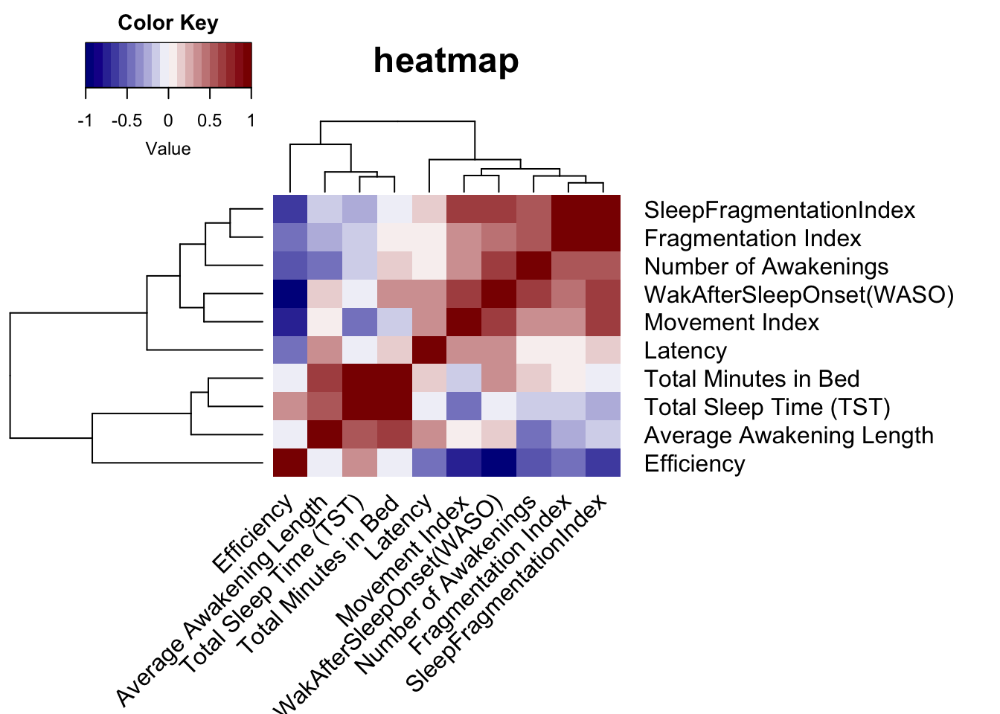
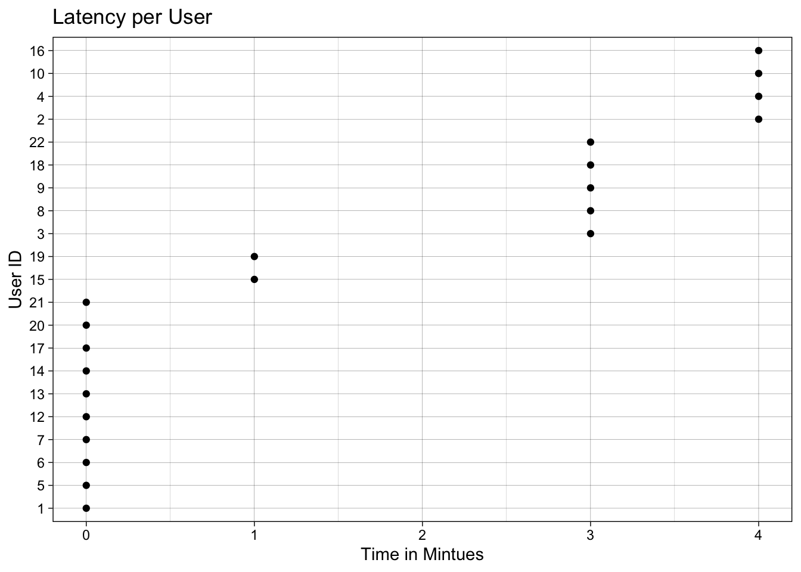
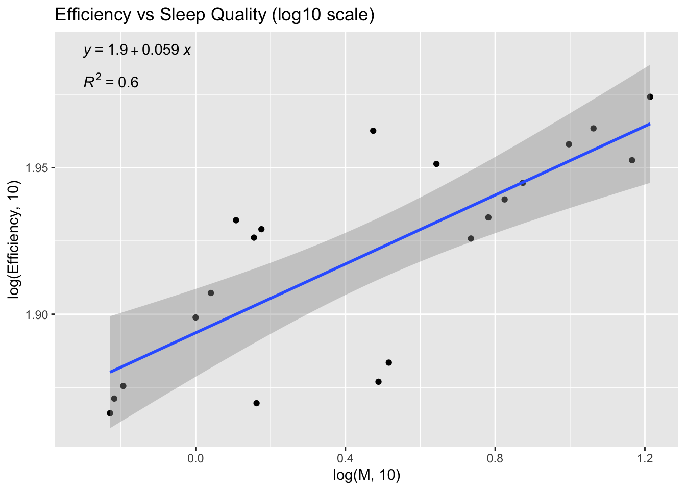
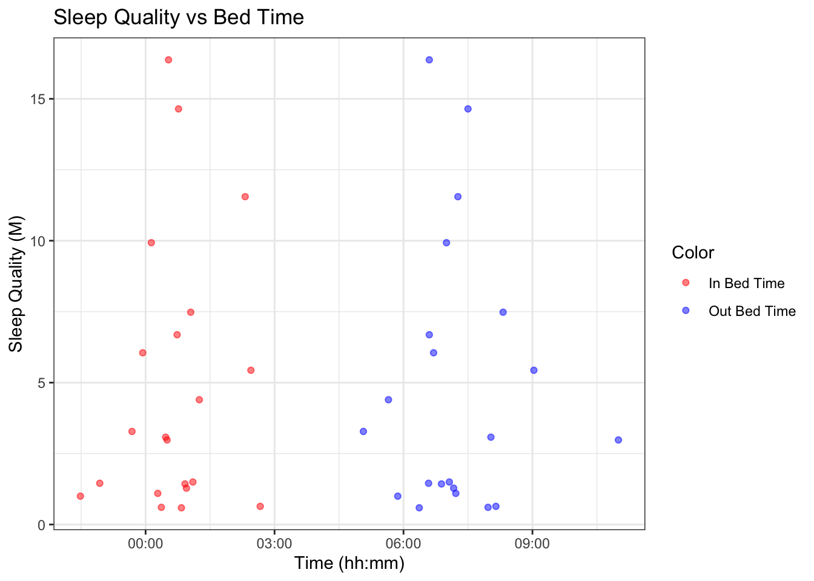
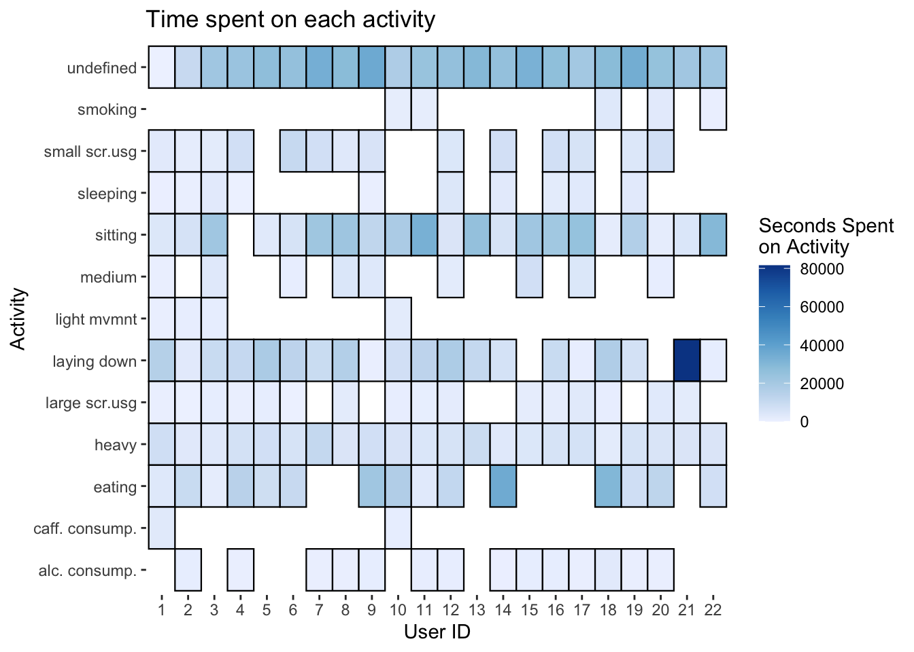
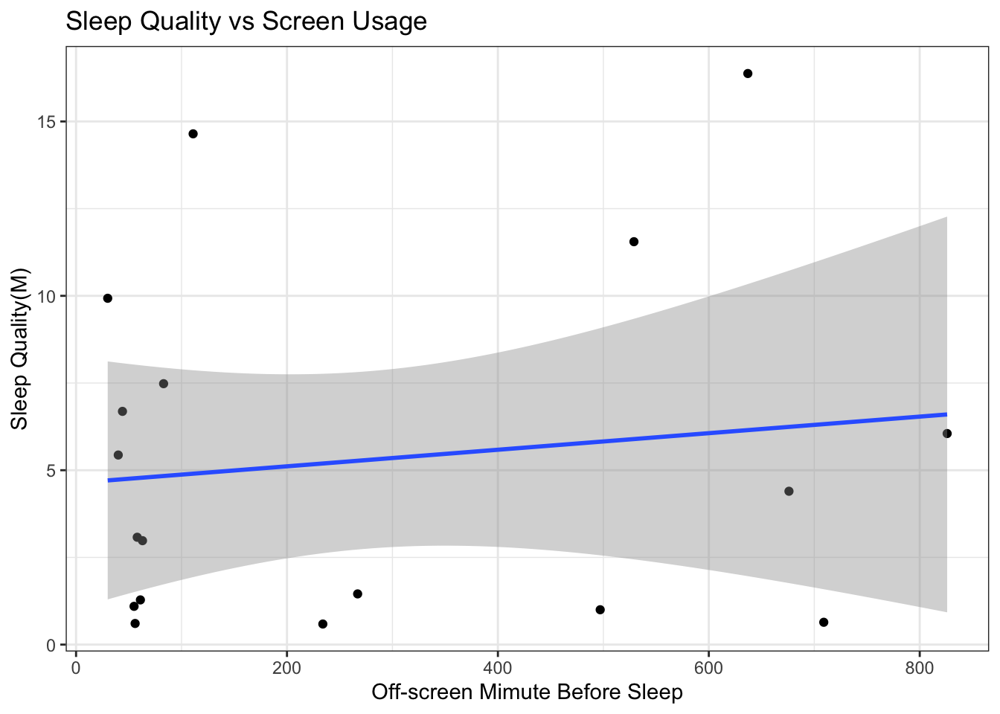

Chapter 5 Results
The results chapter is broadly divided into two sections - one for each of the goals of this project. The first section will document all preliminary findings related to the sleep measurements and the procedure of defining a metric for quantifying quality of sleep.
5.1 Metric Formulation
5.1.1 Preliminary Observations
Formulating a metric requires an extensive analysis of the data to identify correlated variables. This is to avoid multicollinearity while defining the metric. Below is a correlation heatmap we generated for variables that do not have the format of a time stamp (for example hh:mm). We made the following observations -
- Latency, defined as the time taken for the user to fall asleep after he gets into bed, does not seem to be correlated with anything
- Total sleep time (TST) is not correlated with neither Number of Awakenings and Average Awakening Length. One would expect TST to be negatively correlated to both but that is not true
- Movement, Fragmentation and Sleep Fragmentation index are highly correlated. It is not surprising as sleep fragmentation index is defined as the ratio of the two
- Wake After Sleep Onset (WASO) is strongly positively correlated to almost every variable except for Efficiency
- Efficiency, defined as percentage of sleep time on total sleep in bed, surprisingly is not correlated to Total Minutes in Bed
Note: all coefficients are statistically significant with a default critical value of 0.05

5.1.2 Distribution of Variables
There are 3 clusters in the heatmap (if we cut across the tree right below the highest line connecting efficiency and another cluster) which are consistent with the observations we made. To avoid multicollinearity, we picked variables from each of the clusters depending on the strength and significance of the correlation coefficient. We denote our metric by M. Intuitively, it should be higher for users who are able to sleep through the night and do not have any trouble falling asleep. Keeping this in mind, we came up with the following associations -
- M \(\alpha\) Total Sleep Time (TST)
- M \(\alpha\) \(\frac{1}{SleepFragmentation Index}\)
- M \(\alpha\) \(\frac{1}{Latency}\)
- M \(\alpha\) \(\frac{1}{AverageTimeSpentAwake}\)
We combined the above associations as follows -
\[\begin{align*} M \alpha (\frac{TST}{AverageTimeSpentAwake} + \frac{1}{SleepFragmentationIndex}).\frac{1}{Latency} \end{align*}\]
The units of the right hand side are “per hh:mm” (because of addition of latency). Average Time Spent Awake is the product of Number of Awakenings and Average Awakening Length. Let the ratio of TST and Average Time Spent Awake be called sleep ratio.
Next, we quantified the distribution of variables involved in defining M. We wanted to include informative variables instead of the ones that remain constant across the cohort. Due to the small sample size, any analysis of such sort (constructing a metric) will have a selection bias and so the conclusions made throughout this section may not hold for a bigger cohort.
The box plot below shows the distribution of the Sleep Ratio and Sleep Fragmentation Index. The values for both ratios seems well distributed with no outliers.

Since Latency is not a ratio, we visualized it separately as a Cleveland dot plot. There are a lot users with latency time of 0 mins which is a problem since M is inversely proportional to latency. So, we added a dummy term to latency and replaced proportionality with equality (we assume proportionality constants to be 1 - discussed in Conclusions chapter)

We define the sleep quality of a user as -
\[\begin{align*} M = (\frac{TST}{AverageTimeSpentAwake} + \frac{1}{SleepFragmentationIndex}).(\frac{1}{Latency + 1}) \end{align*}\]
In the case that other variables are 0, we simply replace them by 1. We did not add dummy terms as the none of the users in our cohort have \(TST = 0\) or \(Number of Awakenings = 0\). M is always positive as all the variables involved are non-negative.
5.1.3 Distribution of Sleep Quality Metric
We calculated the sleep quality metric for all users and visualized the results as a boxplot. The lowest value is 0.5902 corresponding to user 2 and the largest is 16.33 corresponding to user 12, who is also an outlier. We are interested in investigating users that fall below the lower hinge (users 2, 3, 8, 10, 16) and above the upper hinge (users 1, 12, 14, 20, 21).
## min lower-hinge median upper-hinge max
## 0.5902389 1.2815906 3.0779926 6.6873567 16.3742315Having defined M, we wanted to see if it is capturing the quality of sleep. We used Efficiency to evaluate its accuracy. Given the definition of Efficiency, it should be positively correlated to M.
To test the relationship, we generated a log-log scale plot. We used a log10 scale to normalize the values and to see how the magnitudes of the two variables are related. The regression model is statistically significant with a p-value of 3.681e-05. Positive slope suggests that as M increases, efficiency also increases. However, the adjusted R square value is 0.6 which means that the model captures less than 70% of the variance.
In summary, the metric defined by the formula above seems to be capturing the information that directly affects the sleep quality of a user. Moreover, the statistical significance combined with the positive slope of the regression model and line prove to be a sanity check for our metric.

5.2 Establishing Direct & Indirect Effects on Sleep Quality
In this section, we tried to identify variables that are correlated to sleep quality in some way. The relationships identified cannot be interpreted to be causal as correlation doesn’t imply causation.
This section is divided further into subsections for each file in the dataset. Due to redundancy in data, we analyzed only 4 out of the 7 files - sleep records, user information, activities performed and saliva samples.
5.2.1 Bed Time Does Not Affect Sleep Quality
The practice going to bed early and rising early is encouraged for better sleep and health. We wanted to test this hypothesis using our metric.
We generated a scatterplot and concluded that bed time does not have affect sleep quality. There is no linear relationship; some participants who went to bed later than “usual” have a higher sleep quality than most participants who went to bed early. Similar conclusion can be made for the time a participant got out of bed. The data has high variance and so we cannot conclude that bed times and sleep quality are related.
This can be justified as sleep quality is most likely to be affected by how tired the user feels and total time they slept the day before.
## [1] "user_1" "user_2" "user_3" "user_4" "user_5" "user_6" "user_7"
## [8] "user_8" "user_9" "user_10" "user_12" "user_13" "user_14" "user_15"
## [15] "user_16" "user_17" "user_18" "user_19" "user_20" "user_21" "user_22"
5.2.2 Does Age and Build Affect Sleep Quality?
It has been seen that as a person ages their quality of sleep deteriorates. We analyzed the relationship between age and our sleep quality metric to see if such a pattern emerges. A general trend appeared in the scatterplot, excluding certain outliers. M seems to be linearly related to age till a threshold of 30 years. We saw a sharp decline in sleep quality for users older than 30 years. Moreover, sleep quality remained more or less constant beyond the threshold and is much lower compared to young adults. It is important to keep in mind that sample ages are extremely skewed and so similar pattern might not emerge with the addition of more middle aged users.
Next, we wanted to see if taller people sleep better or not. Similar to the ages, height of users is also skewed. However, we still see close to a linear relationship with a negative slope between M and height till 190 cm. One reason could be, it is easier for short people to get comfortable in bed and that helps them sleep better. We did not categorize users as outliers due to small sample size and low diversity.
We then moved on to see if weight affects sleep quality. As expected, there seems to be no direct relationship between the two. The scatterplot shows the spread of the data which doesn’t have any discernible pattern. Users with weight 70 kg and 80 kg have a range of values for sleep quality.
Since the authors of the data only studied males, we cannot conclude if one gender is inclined to have better sleep quality than another. We refrained from adding more geneder levels in the plot to be politically correct.


5.2.3 Which Activities are Deterimental to Sleep Quality?
From the Activity.csv, we explored the correlation between the sleep quality metric we defined and the total time each user spent on each activity throughout the day. Referring to the graph below, we decided to discuss the common factors, such as heavy activities, screen usage. Initially, we were also curious about the alcohol and caffeine consumption. However, the data was not enough to perform such analysis.
 The correlation between the total time each user spent on each activity and the sleep quality metric is shown below. Here, we only cared about how the factors affect sleep quality. From the heat map, it is clear there are no significant correlation factors.

Next, we tried to group the factors and took time factor into consideration. Will using screen before sleeping affect users’ sleep quality? We first explored small screen usage and large screen usage individually. Overall, it is less likely that using small screen device 4 hours before sleep will affect sleep quality.

5.2.4 How do Biomarkers Affect Sleep Quality?
Research has shown that cortisol and melatonin are hormones produced by our body that regulate circadian rhythm and our internal body clock.
Melatonin eases you into sleep and helps you stay asleep. The production of melatonin is triggered by darkness and is inhibitted by light. This means that people who sleep well are expected to have a high concentration of melatonin before going to sleep and much lesser when they wake up. Cortisol helps you get up and keeps you awake. So, in conclusion, to be able to sleep well you should have low levels of cortisol before sleeping and high levels after you wake up as cortisol and melatonin have opposing rhythms.
We wanted to see how our metric performs against these biomarkers and plotted a bar graph of differences in concentration (before sleep - after sleep) for each of the hormones and participants. Since the actual concentrations of melatonin run in \(10^{-9}\) the differences are really not small and range from -10 to 10, given the scale. We saw that only three users/participants have negative cortisol difference levels.
To better understand if our metric catches the affects of these hormones on sleep quality, we generated a bar graph of M. There isn’t any “obvious” relationship between our metric and the hormones. However, our metric does seem to catch the anomalies like user 2 and 12 that fall on the two extremes. User 2 scored the lowest on sleep quality and has the highest differnece in cortisol levels among the cohort. The presence of more melatonin indicates a possibility of circadian rhythm of user 2 being messed up. In case of user 12, he is the only participant with an ideal combination of differences in concentration levels and also has the highest sleep quality among all.
There are users that don’t follow a trend like user 1. One would think that user 1 would have low sleep quality given the differences but in fact ranks second in sleep quality.